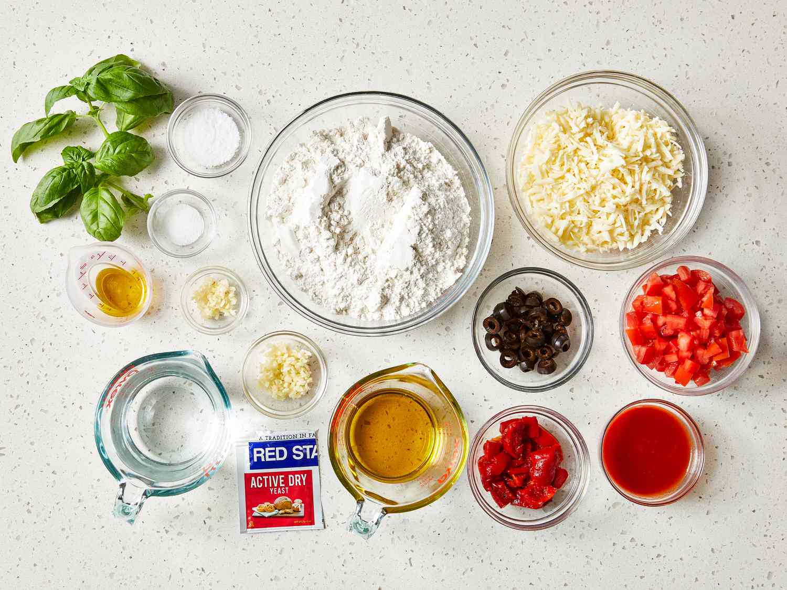

1 baking tray
1 Pizza Cutter
Combine all the ingredients and gently knead with fingertips until a slightly sticky dough forms. You don’t need to knead too much, just until the dough forms. In the Kitchenaid, it took me about 3 mins. Place in an oiled bowl and turn the dough so the oil coats it.Cover with a damp kitchen towel and let it rise for about 20-25 mins or until doubled in volume Punch down the dough and knead lightly until it forms a ball Transfer to a floured surface. Roll the dough into a circle or rectangle, flouring it as you go. You can also transfer straight to your baking tray and flatten with your fingertips until the pizza crust reaches your desired thickness. Use oiled fingertips to make this easier
Boil the tomato sauce with some water and basil / oregano and salt Let it cool and spread on the pizza dough Add grated cheese on top and follow it up with onions, broccoli, cherry tomatoes, onion, capsicum, etc Pre-heat oven to 375F / 200 C and bake for about 15-20 minutes or the pizza base base turns a golden brown Slice and serve pizza hot with chilli flakes and ketchup.With this quantity of dough - you can make two smaller pizzas, use half the dough and refrigerate the rest, or just make one large pizza like I did The toppings and choices are up to your imagination. Choose your own sauce, add pepperoni, ham or any other meals of your choice. The dough can be refrigerated for a day or two but it will continue to rise slowly. If you plan to use it after a day, I’d recommend refrigerating the dough as soon as you knead it; don’t let it rise outside Be generous with salt, I often find my homemade pizza lacks enough salt and tastes bland due to that.
Back to Home